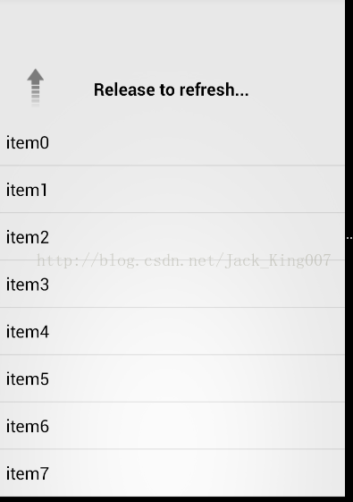
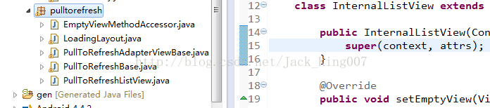

安卓(1)教你怎么使用下拉刷新
很久没用开源项目，重新复习一下下拉刷新 也是想总结下一个项目，应该需要那些东西， 为自己打下基础， 你也可以自己去下 library，关于源码我会在后面放在
效果图

pulltorefresh（下拉刷新） 有一个类是 PullToRefreshListView 因为我只讲下拉刷新，所以只取了一部分的类。 首先复制 将一个包
粘贴进 你的工程

需要注意 这个类还需要一些资源文件：
layout ： header.xml 头部出现的布局 pull_to_refresh_header.xml 刷新的时候出现的布局 如果你们老板不喜欢可以自己定制
drawable-hdpi：目录下 有两张图片 pulltorefresh_down_arrow.png pulltorefresh_up_arrow.png 看名字知道 一个是下拉时图片。一个下拉到一个距离 出现的
还需要一个res/values/attrs.xml 自定义标签
还有res/values/Strings.xml
加入 这里你可以编辑 下拉时候出现的文字
<string name="pull_to_refresh_pull_label">Pull to refresh...</string>
<string name="pull_to_refresh_release_label">Release to refresh...</string>
<string name="pull_to_refresh_refreshing_label">Loading...</string>
<string name="pull_to_refresh_tap_label">Tap to refresh...</string>
其实对于这个开源项目，你可以理解为一个线性布局，因为它内置了一个Listview ，就和ListFagment一样。
相信大家都已经把项目建好了，我在上面已经说过了，可以当作一个线性布局，so 你 就拿着当线性布局用就行了 先写布局
、<pre name="code" class="html"><RelativeLayout xmlns:android="http://schemas.android.com/apk/res/android"
xmlns:tools="http://schemas.android.com/tools"
android:layout_width="match_parent"
android:layout_height="match_parent" >
<pulltorefresh.PullToRefreshListView
android:id="@+id/ptrlv"
android:layout_width="fill_parent"
android:layout_height="fill_parent">
</pulltorefresh.PullToRefreshListView>
</RelativeLayout><pre name="code" class="html">pulltorefresh.PullToRefreshListView 是 PullToRefreshListView类的全名 为了避免出错 ，直接复制包名 打开 PullToRefreshListView 子节点 直接右击一下 选择 copy qualifiled Name <span style="font-size:18px;">开始写java代码吧 </span> 既然在xml 里定义了，肯定要在java代码中实例化， <pre name="code" class="java"> private PullToRefreshListView pullToRefreshListView; pullToRefreshListView = (PullToRefreshListView) findViewById(R.id.ptrlv);
然后通过 getRefreshableView(); 得到一个 listview然后用adapter填充数据
接着 下拉刷新有个方法 setOnRefreshListener 下拉监听 通常情况下：请求网络新数据、解析、展示
全部代码
package com.example.day24;
import pulltorefresh.PullToRefreshBase.OnRefreshListener;
import pulltorefresh.PullToRefreshListView;
import android.app.Activity;
import android.app.ActionBar;
import android.app.Fragment;
import android.os.AsyncTask;
import android.os.Bundle;
import android.view.LayoutInflater;
import android.view.Menu;
import android.view.MenuItem;
import android.view.View;
import android.view.ViewGroup;
import android.widget.ArrayAdapter;
import android.widget.ListView;
import android.os.Build;
public class MainActivity extends Activity {
private PullToRefreshListView pullToRefreshListView;
/** 将会被实例化为自定义的LinearLayout（PullToRefreshListView）中得到的ListView */
private ListView lv;
@Override
protected void onCreate(Bundle savedInstanceState) {
super.onCreate(savedInstanceState);
setContentView(R.layout.activity_main);
pullToRefreshListView = (PullToRefreshListView) findViewById(R.id.ptrlv);
// 从LinearLayout中得到一个ListView
lv= pullToRefreshListView.getRefreshableView();
// 给ListView填充数据
ArrayAdapter<String>adapter=new ArrayAdapter<String>(MainActivity.this,android.R.layout.simple_list_item_1, initData());
lv.setAdapter(adapter);
pullToRefreshListView.setOnRefreshListener(new OnRefreshListener() {
@Override
public void onRefresh() {
//刷新操作，通常情况下：请求网络新数据、解析、展示
//造假：异步.如果要给doInBackground（）传参，可以在execute()中传参
new MyAsyncT().execute();
}
});
}
//listview中得假数据
private String[] initData() {
String [] datas=new String[10];
for (int i = 0; i < datas.length; i++) {
datas[i]="item"+i;
}
return datas;
}
/**泛型1：doInBackground（）参数：：：String url
* 泛型2：onProgressUpdate（）参数：：：Integer progress
* 泛型3：doInBackground（）返回值类型，
* 同时也是onPostExecute（）参数类型 通常：String byte[] Bitmap*/
class MyAsyncT extends AsyncTask<String, Integer, String>{
@Override
protected String doInBackground(String... params) {
try {
Thread.sleep(2000);
} catch (InterruptedException e) {
e.printStackTrace();
}
return null;
}
@Override
protected void onPostExecute(String result) {
//异步任务完成工作。告诉PullToRefreshListView任务完成
pullToRefreshListView.onRefreshComplete();
super.onPostExecute(result);
}
}
}
下一章 将下拉刷新 上拉加载更多一起写上点击下载源码